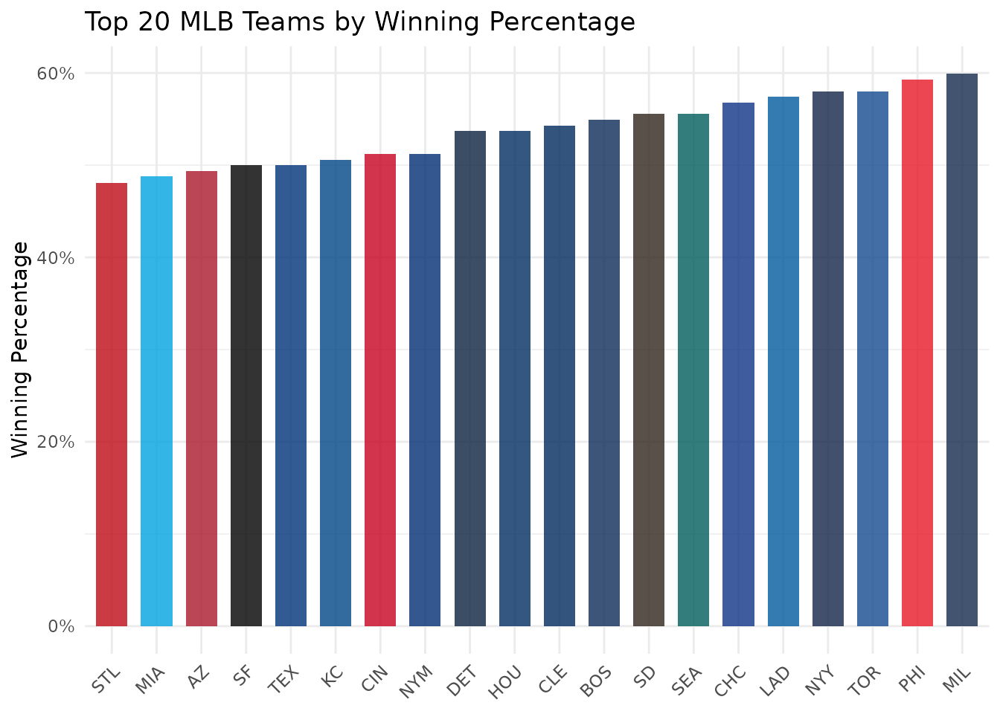
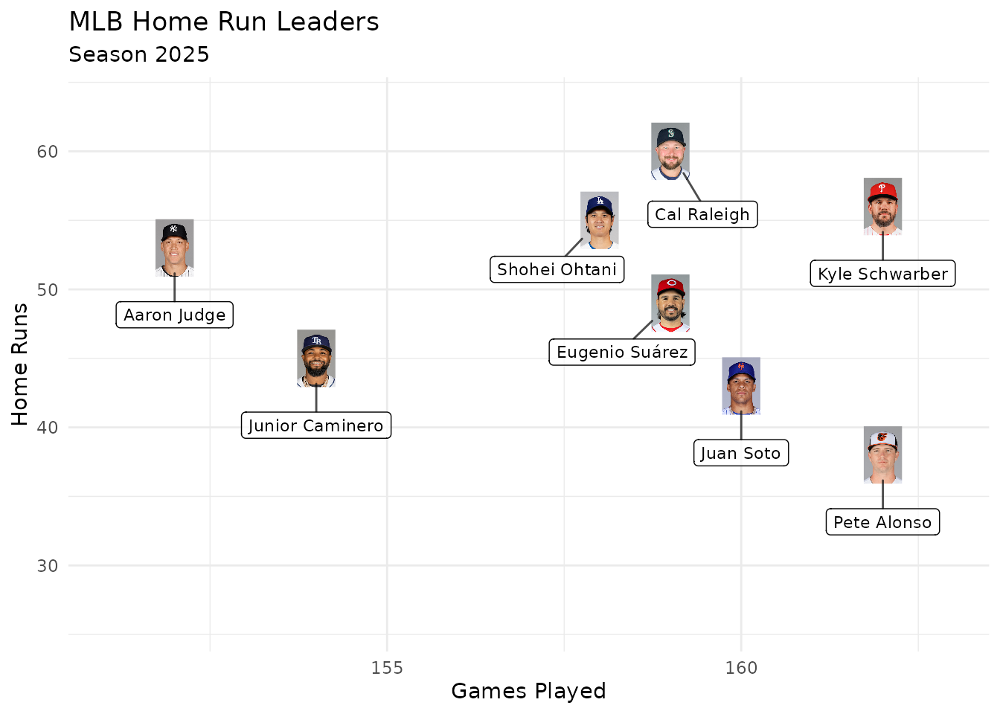
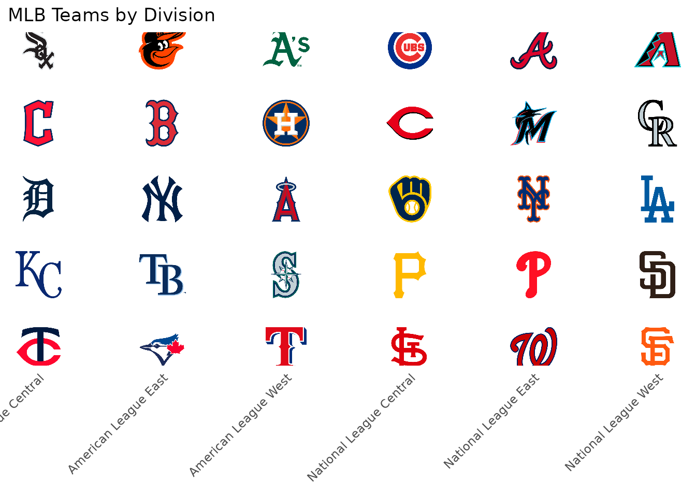
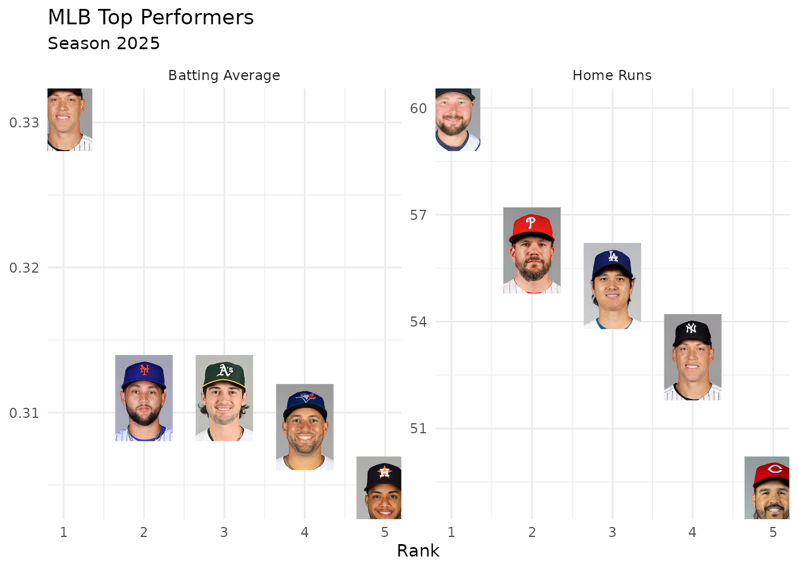
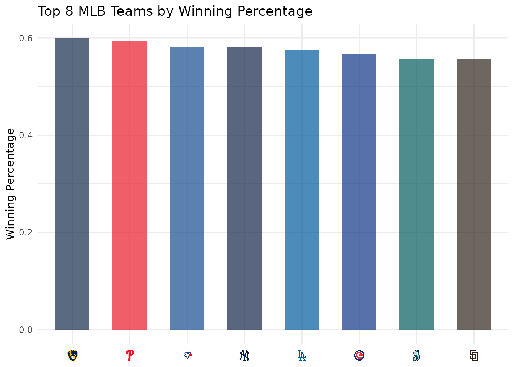

On this page
Introduction
This vignette demonstrates how to create rich MLB visualizations by combining baseballr for player and team data with sdvplotR for team logos, headshots, colors, and gt tables.
Loading MLB Data
Use baseballr to load team and player statistics from
the MLB Stats API:
# The last completed regular season (it ends around October 1)
season <- as.integer(format(Sys.Date(), "%Y")) -
(format(Sys.Date(), "%m-%d") < "10-05")
# One row per team: abbreviation, name and division
teams <- baseballr::mlb_teams(season = season, sport_ids = 1) |>
select(team_id, team_abbreviation, team_name = team_full_name, division_name)
# Standings for both leagues (one string: mlb_standings() rejects a vector)
team_stats <- baseballr::mlb_standings(season = season, league_id = "103,104") |>
transmute(
team_id = team_records_team_id,
wins = team_records_wins,
losses = team_records_losses,
win_pct = as.numeric(team_records_winning_percentage),
runs_scored = team_records_runs_scored,
runs_allowed = team_records_runs_allowed
) |>
inner_join(teams, by = "team_id")
# Season hitting stats for every player, keyed by MLBAM ID
player_stats <- baseballr::mlb_stats(
stat_type = "season",
stat_group = "hitting",
season = season,
player_pool = "All"
)The output below uses a snapshot of these calls taken on October 04, 2026 (baseballr 2.0.0), because the MLB Stats API is not called when this site is built.
The MLB Stats API writes some team abbreviations differently from
ESPN (AZ, CWS); sdvplotR accepts either.
MLB Team Performance
Plot every team’s runs scored against runs allowed, with team logos:
ggplot(team_stats, aes(x = runs_scored, y = runs_allowed)) +
geom_sdv_logos(
aes(team = team_abbreviation),
sport = "mlb",
width = 0.06
) +
scale_y_reverse() +
labs(
title = "MLB Runs Scored and Allowed",
subtitle = paste("Season", season),
x = "Runs Scored",
y = "Runs Allowed (fewer is better)",
caption = "Data: baseballr | Viz: sdvplotR"
) +
theme_minimal()
MLB Team Colors
Use team colors to show winning percentage:
team_wins <- team_stats |>
arrange(desc(win_pct)) |>
head(20)
ggplot(team_wins, aes(x = reorder(team_abbreviation, win_pct), y = win_pct)) +
geom_col(aes(fill = team_abbreviation), width = 0.7) +
scale_fill_sdv(sport = "mlb", alpha = 0.8) +
scale_y_continuous(labels = scales::percent) +
labs(
title = "Top 20 MLB Teams by Winning Percentage",
x = NULL,
y = "Winning Percentage"
) +
theme_minimal() +
theme(
axis.text.x = element_text(angle = 45, hjust = 1),
legend.position = "none"
)
Player Headshots
Plot the home run leaders with their headshots:
top_hr <- player_stats |>
slice_max(home_runs, n = 8, with_ties = FALSE)
ggplot(top_hr, aes(x = games_played, y = home_runs)) +
geom_sdv_headshots(
aes(player_id = player_id),
sport = "mlb",
id_type = "league",
height = 0.1
) +
# Labels sit a fixed share of the y range below their face; ggrepel moves
# the ones that would collide and draws a connector back to the player
ggrepel::geom_label_repel(
aes(label = player_full_name),
nudge_y = -0.22 * diff(range(top_hr$home_runs)),
size = 3,
alpha = 0.7,
box.padding = 0.5,
point.size = 12,
min.segment.length = 0,
seed = 1
) +
scale_x_continuous(expand = expansion(mult = 0.15)) +
scale_y_continuous(expand = expansion(mult = c(0.35, 0.2))) +
labs(
title = "MLB Home Run Leaders",
subtitle = paste("Season", season),
x = "Games Played",
y = "Home Runs"
) +
theme_minimal()
MLBAM player IDs
The MLB Stats API and Baseball Savant identify players by their MLBAM
ID, not their ESPN athlete ID, which is why these headshots pass
id_type = "league": it draws MLBAM IDs from MLB’s own image
CDN. Leave id_type unset for ESPN athlete IDs, such as
those in baseballr’s espn_mlb_*() data. Both are plain
numbers, so the wrong setting draws someone else or nothing.
MLB Team Tiers
Create a tier plot ranking MLB teams:
# Sample tier assignments
tier_data <- data.frame(
tier_no = c(1, 1, 1, 2, 2, 2, 3, 3, 3, 4, 4, 4, 5, 5, 5),
team = c("LAD", "ATL", "HOU", "BAL", "TB", "NYY",
"PHI", "TEX", "TOR",
"SEA", "SF", "CHC",
"BOS", "STL", "CIN")
)
sdv_team_tiers(
tier_data,
sport = "mlb",
title = "MLB Team Tiers",
subtitle = paste("Example tiers,", season, "season"),
tier_desc = c(
"1" = "World Series Favorites",
"2" = "Contenders",
"3" = "Playoff Teams",
"4" = "Bubble Teams",
"5" = "Rebuilding"
)
)
MLB Division Map
Show each division’s teams in a column:
division_map <- teams |>
mutate(division_num = as.numeric(factor(division_name))) |>
arrange(division_num, team_name) |>
group_by(division_num) |>
mutate(team_rank = row_number()) |>
ungroup()
ggplot(division_map, aes(x = division_num, y = team_rank)) +
geom_sdv_logos(
aes(team = team_abbreviation),
sport = "mlb",
width = 0.075
) +
scale_x_continuous(
breaks = seq_along(levels(factor(division_map$division_name))),
labels = levels(factor(division_map$division_name))
) +
scale_y_reverse() +
labs(
title = "MLB Teams by Division",
x = NULL,
y = NULL
) +
theme_minimal() +
theme(
axis.text.x = element_text(angle = 45, hjust = 1),
axis.text.y = element_blank(),
panel.grid = element_blank()
)
MLB Standings Table with Logos
Create a gt table with team logos:
team_wins |>
head(15) |>
mutate(rank = row_number(), logo = team_abbreviation) |>
select(rank, logo, team_name, wins, losses, win_pct) |>
gt() |>
gt_sdv_logos(columns = "logo", sport = "mlb", height = 35) |>
fmt_number(columns = "win_pct", decimals = 3) |>
cols_label(
rank = "#",
logo = "",
team_name = "Team",
wins = "W",
losses = "L",
win_pct = "Pct"
) |>
tab_header(
title = "MLB Top 15",
subtitle = paste("Season", season)
)| MLB Top 15 | |||||
| Season 2025 | |||||
| # | Team | W | L | Pct | |
|---|---|---|---|---|---|
| 1 |  |
Milwaukee Brewers | 97 | 65 | 0.599 |
| 2 |  |
Philadelphia Phillies | 96 | 66 | 0.593 |
| 3 |  |
Toronto Blue Jays | 94 | 68 | 0.580 |
| 4 |  |
New York Yankees | 94 | 68 | 0.580 |
| 5 |  |
Los Angeles Dodgers | 93 | 69 | 0.574 |
| 6 |  |
Chicago Cubs | 92 | 70 | 0.568 |
| 7 |  |
Seattle Mariners | 90 | 72 | 0.556 |
| 8 |  |
San Diego Padres | 90 | 72 | 0.556 |
| 9 |  |
Boston Red Sox | 89 | 73 | 0.549 |
| 10 |  |
Cleveland Guardians | 88 | 74 | 0.543 |
| 11 |  |
Detroit Tigers | 87 | 75 | 0.537 |
| 12 |  |
Houston Astros | 87 | 75 | 0.537 |
| 13 |  |
New York Mets | 83 | 79 | 0.512 |
| 14 |  |
Cincinnati Reds | 83 | 79 | 0.512 |
| 15 |  |
Kansas City Royals | 82 | 80 | 0.506 |
Player Performance Comparison
Compare the home run leaders with the batting average leaders among qualified hitters:
qualified <- baseballr::mlb_stats(
stat_type = "season",
stat_group = "hitting",
season = season,
player_pool = "Qualified"
)This call is read from the same snapshot.
comparison <- bind_rows(
player_stats |>
slice_max(home_runs, n = 5, with_ties = FALSE) |>
transmute(player_id, category = "Home Runs", value = home_runs),
qualified |>
mutate(value = as.numeric(avg)) |>
slice_max(value, n = 5, with_ties = FALSE) |>
transmute(player_id, category = "Batting Average", value)
) |>
group_by(category) |>
mutate(rank = row_number()) |>
ungroup()
ggplot(comparison, aes(x = rank, y = value)) +
geom_sdv_headshots(
aes(player_id = player_id),
sport = "mlb",
id_type = "league",
height = 0.2
) +
facet_wrap(~category, scales = "free_y") +
scale_x_continuous(breaks = 1:5) +
labs(
title = "MLB Top Performers",
subtitle = paste("Season", season),
x = "Rank",
y = NULL
) +
theme_minimal()
Axis Labels with Logos
Replace axis labels with team logos (theme_x_sdv() needs
the ggtext package, and goes after any complete theme such
as theme_minimal()):
top_8 <- team_wins |>
head(8) |>
mutate(team_abbreviation = factor(team_abbreviation, levels = team_abbreviation))
ggplot(top_8, aes(x = team_abbreviation, y = win_pct)) +
geom_col(aes(fill = team_abbreviation), width = 0.6) +
scale_fill_sdv(sport = "mlb", alpha = 0.7) +
scale_x_sdv(sport = "mlb") +
theme_minimal() +
theme_x_sdv() +
labs(
title = "Top 8 MLB Teams by Winning Percentage",
x = NULL,
y = "Winning Percentage"
) +
theme(legend.position = "none")
Next Steps
- Explore baseballr documentation
- Try combining with oddsapiR for betting lines
- Build weekly dashboard with Quarto